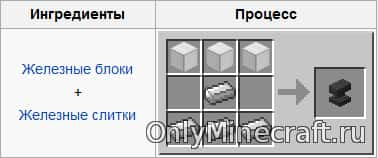

|

Крафт наковальні ПредетиПредметы, вместе с блоками и сущностями, составляют все элементы, которые возможно использовать в Minecraft. В инвентаре блоки представлены в 3D виде, в то время как предметы плоские и имеют небольшой уровень объёмности, когда находятся в руках игрока, и с предварительной сборки 12w50a могут быть выброшены или помещены в рамку. Содержание
Еда требуется для уменьшения шкалы голода. Пищу можно добыть, охотясь на свиней, коров, кур и зомби, занимаясь рыбалкой, находя грибы и делая из них тушёные грибы, выращивая пшеницу и готовя из неё хлеб, выращивая свеклу, морковь и картофель, торгуя с деревенскими жителями и так далее. Также пищу можно найти в сундуках (в сокровищницах). Ещё можно создать несколько видов еды, такие, как торт или тыквенный пирог. Инструменты — предметы, используемые игроком для взаимодействия с окружающей средой. Инструменты в основном используются для удаления блоков с большей скоростью, чем это сделают руки игрока, и для того, чтобы извлекать сырьё из некоторых блоков. Определённые инструменты также могут быть использованы для разведения огня, ловли рыбы, переноса жидкостей или состригания шерсти с овец, также к инструментам относятся часы, компас, карта. Оружие увеличивает урон, наносимый игроком мобам или другим игрокам. Броня защищает игрока от урона, кроме удушения (например, упавшим сверху блоком песка или наковальней), горения (в огне или лаве), отравления, утопления, иссушения и прямого попадания молний (кроме должным образом зачарованной брони). Полный комплект брони включает шлем, нагрудник, поножи и ботинки. Транспорт — это предметы, которые помогают игроку путешествовать в игровом мире как по земле и по воде, так даже по воздуху. Декорации — тип предметов, которые не имеют никакого практического применения и служат для украшения и создания эстетики, например, картины или стойка для брони. Семена нужны для посадки любых видов культур. Некоторые семена довольно сложно найти, например, картофель и морковь (они являются семенами для самих себя) возможно только найти в деревнях или получить в качестве дропа из зомби. Красители — материалы, которые позволяют окрашивать овец, шерсть, стекло, терракоту, ошейники прирученных волков, кожаную броню и звёздочки. Зелья — предметы, которые накладывают положительные или отрицательные эффекты игрокам и мобам. Зелья разделяются на три вида: зелья, которые можно пить, взрывающиеся и оседающие зелья. ID предметовИстория
Интересные факты
Достижения сохраняются в папке с миром. Их можно получить в любом режиме игры, выполнив нужную задачу или используя команду /advancement. Достижение можно выполнить даже без завершения прошлых достижений, находящихся перед данным. Когда достижение выполнится, в правом верхнем углу и в чате появится сообщение об этом. Цвет текста заголовка в уведомлении зависит от достижения: у целей и обычных достижений жёлтый текст заголовка, у испытаний — розовый. Заголовок при выполнении обычного достижения — «Новое достижение!», цели — «Цель достигнута!», испытания — «Испытание завершено!». Если вы выполните любое испытание, то вам воспроизведётся соответствующий звук. Предмети які важко дістати
|